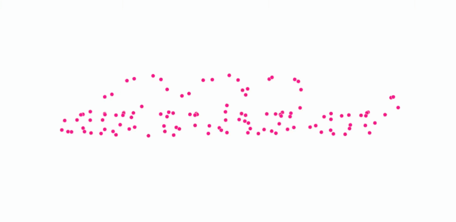
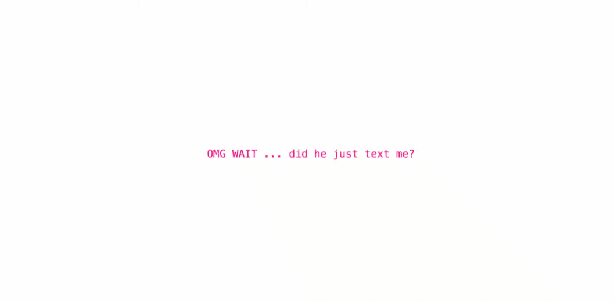

<button> Do you want to Skip to Week Four? </button>
<button> Or Week Six </button>
//may 01, 2025
//why doesn't he like me???
let thoughts = ["fix your posture", "you're typing really loud", "would he like me if i was blonde?", "do i look fat in this dress?"];
function draw() {
background("ragingred");
let randomThought = random(thoughts);
text(randomThought, mouseX, mouseY);
}
<reflection>
<p> In Week Five we began to explore camera and colour in images. For me I have been battling demons questioning why this guy hasn't responded to me. I've attempted to visualise the concept of insecurity and how women are constantly under scrunity for the way they look and present themselves. God forbid a girl lives. This week is a reflection of revealing and reflecting on inner struggles. </p>
<activities>
<h3> mirror who is the fairest of them all </h3>
<p> This p5.js experimentation uses face tracking to reveal internal monologue and critique. It reveals certain insecurities through the webcam to create a space of emotional exposure and self-surveillance. I was inspired by the language of beauty standards and intended to almost distort the concept of being percieved by including intrusive thoughts and micro anxieties. The idea that the machine is reflecting these "truths" plays into my whole concept as the girl as the machine and humanising the code. (It's a bit slow but I promise it works) </p>
<image src = "./INTMEDIAFACETRACKPINK/index.html">

</image>
<h3> he loves me or he loves me not? </h3>
<p> This sketch explores the use of textToPoints in p5.js as we learnt how to convert strings to individual x and y coordinates. This has opened up many possibilities in working with typography as a dynamic form. I've used this feature to communicate my story, relating to the almost obsessive questioning that a girl can go through, to a point where it is unstable. The moving dots reflect the anxious feeling of constant uncertainty and almost echos a spiraling thought. </p>
<image src = "./INTMEDAWEEK5FONTS/index.html">

</image>
<h3> GUYS I THINK HE TEXTED ME </h3>
<p> In this p5 sketch I've used the copy() function to create a "scratch to reveal" effect to reveal an underlying message. The sketch is simple, at first it is hopeful and excited at the potential of a text. But as you interact, it reveals that it was an illusion and you are met with a 404 error message, because he in fact did not message you. It was probably your mum. </p>
<image src = "./INTMEDIAWEEK5COLOURIN/index.html">

</image>
<h3> some code snippets! </h3>
<p> working on the landing page for week 5 p5.js </p>
<image>
</image>
<p> learning how to translate texts into points in p5 </p>
<image>
</image>